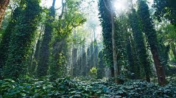
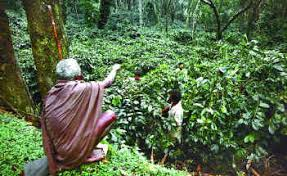
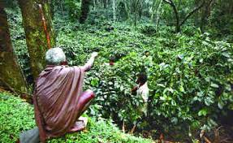
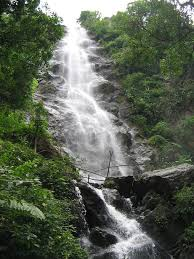
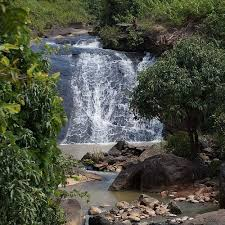
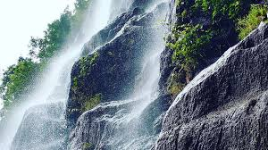

Araku Valley is a hill station in the Visakhapatnam district of
Andhra Pradesh, India, located in the Eastern Ghats mountain
range at an elevation of about 3,200 ft. It's known for its
coffee plantations, waterfalls, streams, gardens, and valleys.
1.coffee plantations
Araku is today the largest certified organic and biodynamic
agriculture coffee plantation in the world. Invented by
Rudolf Steiner in 1924 and considered the organic crop of
tomorrow, biodynamics is a set of natural methods to
promote the quality and health of crops.

 

2.waterfalls
Araku Valley, located in the Eastern Ghats of Andhra Pradesh,
India, is renowned for its natural beauty and scenic
landscapes. While Araku Valley is primarily known for its
lush greenery, coffee plantations, and tribal culture,
it also boasts several captivating waterfalls that add
to its allure.



These waterfalls in Araku Valley attract tourists and nature
lovers alike, offering a refreshing escape from the hustle
and bustle of city life. Visitors can immerse themselves
in the beauty of nature, enjoy the cool breeze, and
listen to the soothing sound of cascading water
as they explore the picturesque landscapes of Araku
Valley.